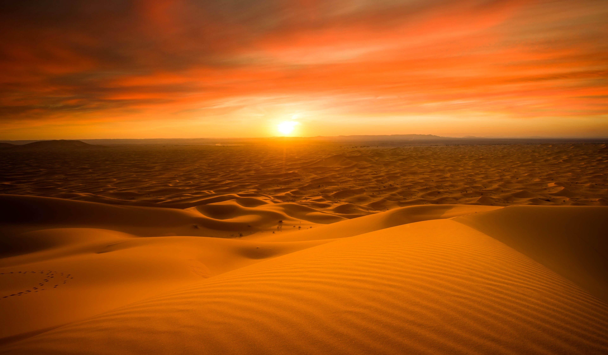

The desert comprises much of North Africa, excluding the fertile region on the Mediterranean Sea coast, the Atlas Mountains of the Maghreb, and the Nile Valley in Egypt and the Sudan. It stretches from the Red Sea in the east and the Mediterranean in the north to the Atlantic Ocean in the west, where the landscape gradually changes from desert to coastal plains. To the south it is bounded by the Sahel, a belt of semi-arid tropical savanna around the Niger River valley and the Sudan region of sub-Saharan Africa. The Sahara can be divided into several regions, including the western Sahara, the central Ahaggar Mountains, the Tibesti Mountains, the Aïr Mountains, the Ténéré desert, and the Libyan Desert.
